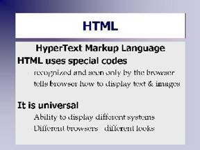

How HTML Works
The key to HTML is a set of brackets: < and > and a slash /
As the browser program reads through the text file, each time it comes to a < it knows that this is the first character of a tag or layout command.

[D]The browser reads the tag until it comes to the >. Once the tag is in memory, the browser looks it up in a table to see what to do. It changes the display of the page accordingly until it gets to a matching stop tag which contains a slash "/". Once the stop tag is read, the browser turns off that type of markup and continues on.Here's an example:
This shows how to make text <strong>dark and bold</strong>.
- The browser reads through the text, displaying everything normally until it gets to the <.
- It reads in the <strong> and sets the output to bold. You can read this tag as "start strong"
- The browser now outputs the text "dark and bold" using boldface type until it comes to the next <
- It reads in the </strong> which tells the browser to turn off the boldface. You can read this tag as "stop strong".
- Each tag is read and discarded by the browser. It is important to remember that the tags don't display. And, if you forget the stop tag, the browser will keep on outputting that markup until the end of the document. (You'll experience this in a few weeks when you have a hyperlink that goes to the end of your page! That means you forgot to stop the hyperlink with a stop tag.)
- If a tag is not recognized by the browser it will simply be ignored by the browser.
- Everything that isn't marked as a tag will be displayed on the screen.
- The browser output will look like this:
This is how to make text dark and bold.
This type of mark-up has several advantages:
- It is text based. A few simple codes can be used to incorporate images, color, and different fonts. The formatting is done at view-time (on the client-side) and does not have to be transported over the network.
- As a text file HTML is easy and fast to transport over TCP/IP networks like the Internet, especially when compared to graphic images.
- It's universal. Being text based, HTML can be read by any browser on any computer system. Any system, be it a Macintosh or a PC or a Linux system will display the text according to the browser program it is using. Graphic and other text formats such as Microsoft Word or PDF are not that universal.